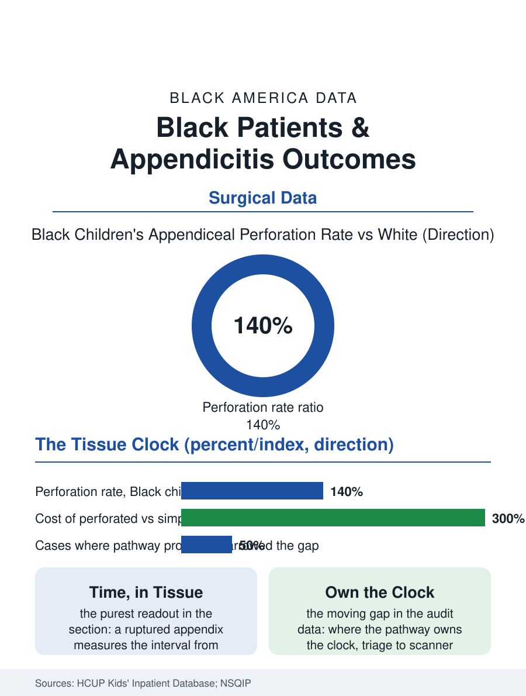

Black Public Health
A Clock in Tissue: Black Patients and Appendicitis
The perforated appendix is a clock rendered in tissue, and Black children arrive ruptured at rates a third to a half higher. The appendicitis file.

Appendicitis is surgery's most democratic emergency, striking without regard to income or insurance, and for that reason its outcome data are among the health file's most revealing: Black children and adults present with perforated appendicitis, the appendix already ruptured, at substantially higher rates than white patients, a difference that measures nothing but time and access. This article reads the appendicitis file.
The Perforation Rate as a Clock
The perforation is the file's central variable because it is a clock rendered in tissue: the appendix obstructs, inflames, and ruptures on a timeline of hours to a few days, so the perforation rate at surgery records, with a precision few measures match, the interval between the pain's onset and the operating room, as filtered through the family's reading of the pain, the distance to the hospital, the emergency department's evaluation, and the imaging and surgical cascade. The discharge and registry data place the Black perforation rate roughly a third to a half higher than the white rate in the pediatric studies, where the signal is cleanest, and the decomposition studies assign the difference substantially to the pre-hospital interval and the evaluation's own delays, the atypical presentation's discount in the encounter file's pattern, the child's pain read through the triage templates, the imaging ordered later, with the transfer file adding its chapter, the child first seen at the facility without the pediatric surgery service traveling the inter-hospital road while the clock the tissue keeps runs on. Insurance status carries a share of the gap independently in the analyses, the uninsured and Medicaid child's perforation running ahead of the privately insured child's of the same race, the access variables stacking in the small body. The rural file appends its own chapter, the critical access hospital without the surgeon on site, where the decision to transfer or observe is made against the weather and the distance, and where the Black farm family's child rides the same ambulance economics as the trauma file's, the golden interval spent on the road the system's map drew.
What Perforation Costs
The perforated case is a different disease from the simple one in the outcome data: the abscess and the peritonitis, the week of antibiotics where the simple case takes a day, the readmissions and the reoperations, the school weeks and the parents' work weeks consumed, the cost multiple in the hospital accounting running at several times the uncomplicated case, and the long tail, the adhesion and fertility questions the pediatric literature follows into the patient's adult file. The surgical system's quality response in the file is the protocol era's: the imaging pathways that reduced the negative appendectomy rate to the low single digits, the antibiotic-first management trials for the uncomplicated case that may redraw the operation's indications, and the time-to-imaging standards the children's hospitals now audit by the demographics this file names, with the early audit results showing the gap narrowing where the pathway, rather than the individual judgment, owns the clock, the file's recurring structural lesson in surgical dress. The adult data echo the pediatric pattern at lower amplitude, the worker's pain endured through the shift in the presenteeism pattern, the uninsured adult's perforation the emergency file's standard entry.
The Honest Emergency
The appendicitis file closes on the measure's honesty, which is why the researchers prize it: unlike the elective disparities, where preference and judgment blur the accounting, the ruptured appendix in a child is close to a pure readout of the system's speed for that child's family, and its racial gradient is therefore among the hardest numbers in this section to explain away. The trend in the audited systems is the file's hope and its instruction: the gap is a process measure, it moves when the process is owned, the pathway's clock replacing the encounter's discretion from the triage desk to the scanner to the surgical call. The discharge data count the perforations each year in the thousands of children. The file's last entry is the interval itself, the hours between the bellyache at breakfast and the incision, in which everything this atlas files under access either happens or does not, for a six-year-old whose appendix is keeping time in the only units that cannot be argued with.
More in Black Public Health
Hypertension Among Black Adults: Prevalence, Control, and Consequences
About 55 percent of Black adults have hypertension — the highest rate of any U.S. group. Prevalence, onset, control, and the stroke, heart, and kidney consequences in the data.
Diabetes Among Black Adults: Prevalence and Complications
Nearly one in five Black adults has diabetes, diagnosed or undiagnosed — and its complications fall with particular weight. The CDC data on prevalence, control, and outcomes.
Black Life Expectancy: The Gap at Birth and Its Causes
Black life expectancy at birth is about 73 years, roughly five years below the national figure — the summary measure of every health gap in this section. The CDC data.
Source: Agency for Healthcare Research and Quality, Kids' Inpatient Database; American College of Surgeons NSQIP pediatric appendicitis analyses.